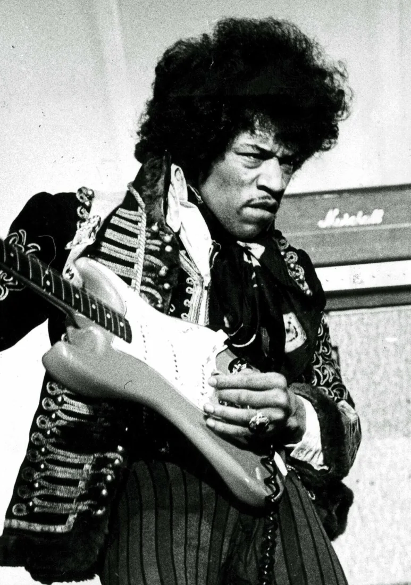
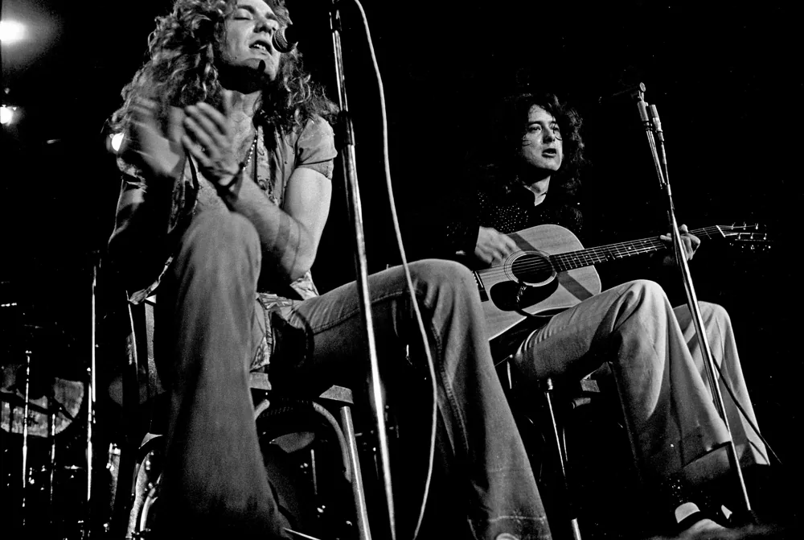
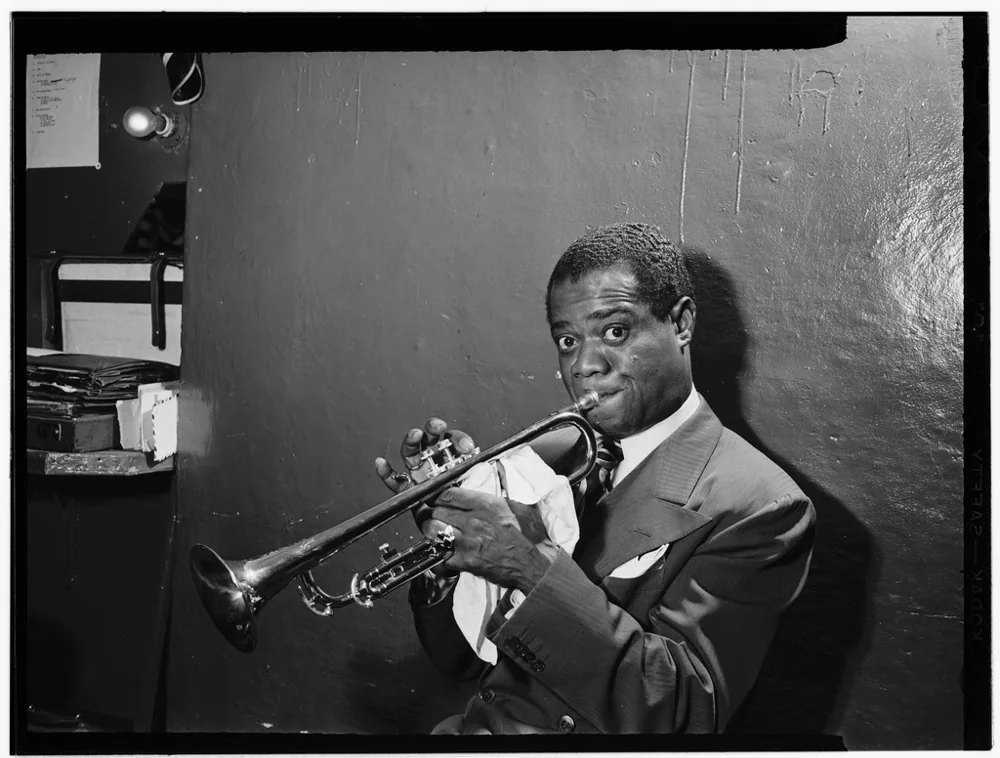
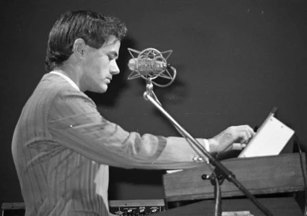

The Jimi Hendrix Experience
Hendrix, Noel Redding, and Mitch Mitchell pushed electric blues into psychedelia.
Listen · Purple HazeMusic encyclopedia
Explore the genres, bands, and turning points that shaped recorded music.
Explore genres
Stockholm, Sweden 1967
Blues and country roots, electric riffs, and a family tree that runs from psychedelia to punk.

Follow the changing shape of improvisation, from big-band swing to bebop and free jazz.

Synthesizers and sequencers open a path from Kraftwerk’s repeating patterns to the pulse of techno.
Hendrix, Noel Redding, and Mitch Mitchell pushed electric blues into psychedelia.
Listen · Purple HazeThe Liverpool quartet brought its vocal harmonies to an American TV audience on The Ed Sullivan Show in 1964.
Watch · I Want to Hold Your HandThe Düsseldorf group made a motorway journey the subject of its 1974 electronic composition Autobahn.
Listen · AutobahnLarge dance bands paired written horn arrangements with room for individual solos.
After The Beatles broke through in the US, groups including The Rolling Stones and The Kinks followed them into the charts.
On Autobahn and Trans-Europe Express, Kraftwerk turned the rhythms of modern travel into electronic pop.